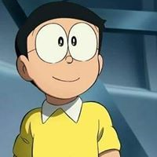
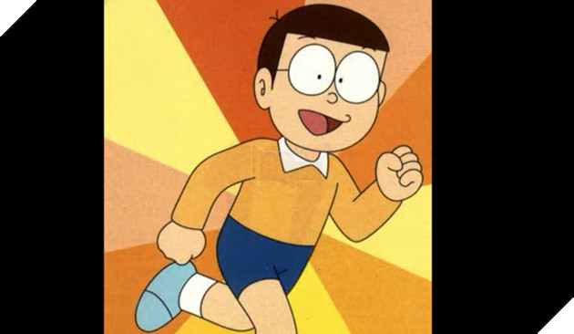
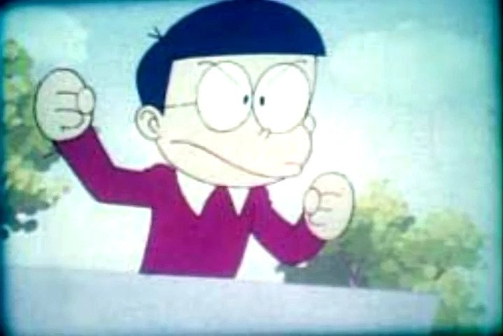

Nobi Nobita
野比のび のび太た
| Thông tin nhân vật | |
|---|---|
| Trạng thái: | Còn sống |
| Giới tính: | Nam |
| Tuổi: | 10 |
| Chiều cao: | 1m 40 (4ft 7in) (thiếu niên)
1m 77 (5ft 10in) (thanh niên) |
| Cân nặng: | 45kg (84lb) |
| Màu tóc: | Đen |
| Màu mắt: | Đen |
| Nước da: | Vàng nhạt |
| Sinh nhật: | 7/8/1962 |
| Gia Đình, Bạn Bè | |
| Cha Mẹ: | Nobi Nobisuke (cha)
Nobi Tamako (mẹ) |
| Họ Hàng: | Nobi Goro (Anh họ)
Kataoka Tamao (bác) |
| Con cái: | Nobisuke (con trai)
Sewashi (chắt) |
| Bạn bè: | Doraemon (bạn thân)
Shizuka, Jaian, Suneo, Dekisugi,... và còn nhiều người khác nữa.
Non (bạn thuở nhỏ) |
| Kẻ thù: | Jaian, Suneo (có lúc). |
| Biệt danh | Hậu đậu
bốn mắt
lười biếng |
| Tài năng, tính cách | |
| Tài năng: | Chơi dây, ngủ ngày, ăn trứng ngỗng,chơi cờ caro
|
| Đặc biệt: | Rất quan tâm đến mọi người
|
| Tính cách: | Hậu đậu, vụng về, lười biếng, ham chơi, yếu đuối, nhút nhát, sợ sệt (bản tính thường ngày)
tốt bụng, nhân hậu, dũng cảm, đáng tin cậy (khi có chuyện cần thể hiện)
|
| Sở thích: | Shizuka 🚫, đọc truyện tranh, xem tivi, ngủ ngày, xem quần lót (đặc biệt là Shizuka), ăn vặt, nhìn Shizuka tắm, đi chơi với Shizuka |
| Ghét: | Học bài, học bơi, sự phiền toái, khi tạm biệt ai đó (đặc biệt là Doraemon), Shizuka đi chơi với Dekisugi, bị Jaian và Suneo bắt nạt, Doraemon không cho cậu mượn bảo bối |
| Nỗi sợ: | Ma quỷ , thầy giáo, mẹ, Jaian và Suneo,... (rất nhiều thứ)
|
| Món ăn ưa thích: | Mì |
| Màu ưa thích: | Vàng |
| Thần tượng: | Ito Tsubasa, Marui Mari... (còn nhiều) |
| Ước mơ: | Cưới Shizuka làm vợ và có cuộc sống hạnh phúc |
| Sự nghiệp: | Học sinh, sau này thì làm nhân viên kế toán nối nghiệp bố |
Một số hình ảnh của Nobita qua các giai đoạn
  ❝ "...Điều tồi tệ nhất chính là khi cậu nghĩ rằng bản thân mình không tài giỏi và vô dụng thôi..." ❞
- Nobita
Nobi Nobita (Nhật: 野比のび のび太た (Dã Bỉ Đại Thái) Nobi Nobita?) là cậu bé 10 tuổi của bộ truyện Doraemon, là con một của gia đình Nobi, thuộc cung hoàng đạo Sư tử. Nobita là một cậu bé vụng về, ngốc nghếch, hậu đậu nhưng tốt bụng và chân thành. Cậu sống ở khu phố trong quận Nerima, thành phố Tokyo, học lớp 4E cùng với những người bạn của mình là Shizuka, Suneo, Jaian, Dekisugi.
Hồ Sơ
Ngoại hình, dáng vẻ
Luôn được khắc họa với ngoại hình một cậu bé tiểu học, với chiều cao khoảng 1m42 và cân nặng khoảng 38 kg, chân tay mềm yếu, mái tóc luôn bù xù. Đặc biệt, Nobita luôn đeo một chiếc kính cận tròn dày cộp, nếu thiếu nó, cậu gần như không thể làm gì do bị cận thị nặng. Chiếc áo Nobita ưa thích là chiếc áo phông màu vàng. Ngoài ra, cậu còn mặc những bộ quần áo khác nhau trong suốt các loạt manga và anime. Cậu thường hay ngủ nướng và luôn luôn đi học muộn. Ngoài ra, cậu ta luôn luôn bị 0 điểm. Lên cấp hai, mái tóc Nobita có phần nhiều hơn nhưng vẫn gọn gàng và các đặc điểm khác không thay đổi nhiều cho lắm. Khi học cấp ba, Nobita hơi mập hơn trước và có nhiều mụn. Khi đi làm, Nobita khác hẳn so với hồi còn trẻ: mập mạp hơn, mái tóc bồng lên chứ không còn như hồi trẻ con và để dài ra sau.Tính cách
Nobita vô cùng hậu đậu, vụng về, đôi lúc khá đãng trí, cậu ta còn quên cả chiếc cặp ở nhà Shizuka do quá mải mê đọc truyện Sherlock Holmes - quyển truyện mà cậu vô tình cầm nhầm của Shizuka. Khi mới học lớp một, Nobita là một cậu bé rất thông minh, luôn được điểm cao, chơi thể thao giỏi nên được gọi là thần đồng. Thế nhưng, vì quá ỷ lại vào trí thông minh, càng học cậu càng lười biếng, cuối cùng bị xếp bét lớp. Mặt khác, Nobita cũng là một cậu bé tốt bụng, có tấm lòng vị tha, nhân ái. Trong hôm trước ngày cưới của mình, Nobita đã sẵn sàng xả thân cứu một chú mèo con và dành cả một ngày để tìm lại chủ cho chú mèo đó. Trong truyện dài tập 10, cậu đã cứu Chippo trong một đêm mưa bão khi cậu vừa ra khỏi rừng cấm Tuy bị coi là hậu đậu, nhưng không ít lần, Nobita đã trở thành anh hùng nhờ sự dũng cảm, may mắn và cả thói hậu đậu của mình. Thực ra, Nobita khá giỏi, nhưng cậu lại rất ít khi chăm chú vào học bài, kể cả những lúc có hẳn cả một đêm không ngủ. Chính vì vậy, cậu mới lâm vào những tình huống dở khóc, dở cười khi được điểm 10 mà mọi người không ai chịu tin.Minamoto Shizuka
みなもと 源静香しずか
| Thông tin nhân vật | |
|---|---|
| Trạng thái: | Còn sống |
| Giới tính: | Nữ |
| Tuổi: | 9 (anime 1973)
10 (anime 1979 và 2005) |
| Chiều cao: | 1 m 40 (4 ft 7 in)
1 m 75 (5 ft 9 in) (trưởng thành) |
| Cân nặng: | 40 kg (88 lb) |
| Màu tóc: | Nâu (loạt phim 1973 và 1979)
Đen (manga và loạt phim 2005) |
| Màu mắt: | Vàng |
| Nước da: | Vàng |
| Sinh nhật: | 8/5/1962 |
| Gia Đình, Bạn Bè | |
| Cha Mẹ: | Minamoto Yoshio (cha)
Minamoto Michiko (mẹ) |
| Thú nuôi: | Pero, Pi |
| Con cái: | Nobisuke (con trai)
Sewashi (chắt) |
| Bạn bè: | Doraemon (bạn thân)
Shizuka, Jaian, Suneo, Dekisugi,... và còn nhiều người khác nữa.
Non (bạn thuở nhỏ) |
| Hôn nhân | Nobita |
| Tài năng, tính cách | |
| Tài năng: | học giỏi, thể thao
|
| Tính cách: | hiền lành, dễ thương, thân thiện, lễ phép.
|
| Sở thích: | chơi violon, tắm, khoai lang nướng (sở thích bí mật), hát karaoke. |
| Ghét: | Học piano, Nobita vào trong bồn tắm. |
| Nỗi sợ: | Ma, nhện, gián, ếch, Nobita vào trong bồn tắm
|
| Món ăn ưa thích: | Khoai lang nướng (Thứ nhất)
Bánh pho mát (Thứ nhì)
Sushi(Thứ ba) |
| Thần tượng: | Tano Kinpei, Saijo Hiromi, Tahara Hon, Matsuda Naoko, còn nhiều nữa. |
Một số hình ảnh của Shizuna qua các giai đoạn


❝ "Một người với sức mạnh thực sự sẽ không bắt nạt kẻ yếu." ❞
- Shizuka
Minamoto Shizuka (Nhật: 源みなもと 静香しずか (Nguyên Tĩnh Hương) Minamoto Shizuka?) là một cô bé 9 tuổi của bộ truyện Doraemon, là con một của gia đình Minamoto, thuộc cung Sư Tử. Shizuka là một cô gái đáng yêu, hiền lành, thân thiện, luôn lễ phép nên được nhiều người yêu quý. Cô sống ở Tokyo, học lớp 4E cùng với những người bạn của mình là Nobita, Suneo, Jaian, Dekisugi
Hồ Sơ
Ngoại hình, dáng vẻ
Shizuka là một cô bé rất dễ thương. Gương mặt tròn bầu bĩnh, đôi mắt to tròn, hai bím tóc hình hoa anh đào dễ thương, mái tóc màu đen óng (ban đầu là màu nâu), cùng những bộ trang phục hết sức xinh xắn. Cô có một bộ trang phục ưa thích là bộ váy có cổ vai màu trắng và màu hồng, váy thì lúc xanh lam hay xanh lục. Ngoài ra, cô còn mặc những bộ quần áo khác nhau trong suốt các loạt manga và anime. Khi trưởng thành, ngoại hình chỉ thay đổi duy nhất là bím tóc đuôi gà chứ không còn bím tóc hình hoa anh đào như trước nữaTính cách
Khi cô trưởng thành, tính cách của cô có vẻ khá giống và nghiêm khắc như mẹ Nobita. Shizuka là người hiền lành, dễ thương, thân thiện, lễ phép. Nên được nhiều người yêu quý. Cô chăm sóc những người yếu hơn, động vật bị ngược đãi và búp bê bị bỏ rơi. Cô mong muốn trở thành một y tá hoặc một nữ tiếp viên hàng không khi cô lớn lên. Cả hai công việc đều phản ánh bản chất tốt bụng của cô. Shizuka yêu búp bê của mình rất nhiều, đến mức cô yêu chúng hơn cả bạn bè của mình. Cô ấy đã từng giải thoát một con chim nhỏ khỏi một chuỗi dây mà nó bắt được. Cô ấy cũng quan tâm sâu sắc đến gốc cây của Ông Nội. Khi cô không thể cứu ốc cây, cô bị tàn phá nhưng sau đó cảm thấy nhẹ nhõm khi nhìn thấy một mầm nhỏ từ gốc cây của Ông Nội. Trong một tập phim, Doraemon, Nobita và Shizuka đã đưa búp bê của mình vào những chiếc xe đua của Nobita và bắt đầu đua. Xe của Nobita bị đâm và con búp bê rơi ra, khiến Shizuka khóc và ghét cậu ta tạm thời. Nhưng khi cô ấy thấy Nobita làm điều đúng đắn hoặc điều tốt cho người khác, nó sẽ đủ để khiến Shizuka thực sự tha thứ cho Nobita. Cô ấy cũng được biết đến vì đôi khi đi học piano nên cô ấy có thể từ chối đi chơi với Nobita, điều mà cô ấy không thích vì cô ấy thích violin hơn. Niềm đam mê thực sự của cô là khoai lang và, một lần nữa, cây vĩ cầm, trong đó cô chơi cũng khủng khiếp như giọng hát của Jaian. Giống như Jaian, cô ấy cũng bị khiếm thính khi chơi violin kinh khủng. Đôi khi, việc tập luyện của cô làm phiền hàng xóm, đó là lý do tại sao mẹ cô lại nổi giận với cô. Shizuka được chia ra nhiều tính cách, phần lớn được thể hiện trong anime năm 1973 và những tập rất sớm của anime năm 1979. Có những cảnh cho thấy cô ấy ngủ và ăn cùng một lúc, ăn cắp son môi của mẹ để cho cô ấy chơi, nuốt một viên đá quý (thật mà nói, nếu chúng ta đi xem phim hoạt hình năm 2005, cô ấy đã bị TV làm cho mất tập trung để nghe mẹ cô đã để nó trong bát đậu phộng. Chúng ta không biết tại sao cô lại nuốt nó ngay từ đầu trong bộ phim hoạt hình năm 1979) và trượt vỏ chuối. Ngoài ra, trong tập Cô Phù Thủy Shizuka, cô ấy ở bên ngoài muộn, vì vậy mẹ cô ấy đã nhốt cô ấy ở bên ngoài. Tuy nhiên, trong các tập sau của anime năm 1979, cô được miêu tả là "nữ tính" và nữ tính hơn. Trong anime 2005, cô vẫn "nữ tính" và ngọt ngào và tốt bụng, nhưng ít hơn một chút so với anime năm 1979. Trong bản lồng tiếng Anh, tính cách của cô đã được viết lại một phần là tính cách thể thao hơn (mặc dù bản chất tốt bụng và ngọt ngào của cô). Và tình yêu tắm của cô đã được gỡ bỏ. Mặt khác, cô rất dễ nổi giận khi đụng chạm đến sở ghét của cô (Thường thì Shizuka nổi giận khi Nobita lật váy hay nhìn lén khi tắm).Doraemon
ドラえもん
| Thông tin nhân vật | |
|---|---|
| Trạng thái: | Còn sống |
| Giới tính: | Nam |
| Tuổi: | -91 |
| Chiều cao: | đứng : 129,3 cm (4 ft 3 inch)
ngồi : 100 cm |
| Cân nặng: | 129,3 kg (285 lbs) |
| Nước da: | Xanh lam và trắng (trước đầy là vàng và tráng) |
| Sinh nhật: | 3/9/2112 |
| Gia Đình, Bạn Bè | |
| Cha Mẹ: | Nobi Nobisuke (cha nuôi)
Nobi Tamako (mẹ nuôi) |
| Anh chị em: | Dorami (em gái) |
| Chủ nhân: | Sewashi |
| Bạn bè: | Nobita (bạn thân)
Shizuka, Jaian, Suneo, Dekisugi,... và còn nhiều người khác nữa.
Mimi (bạn gái) |
| Kẻ thù: | Chuột (kẻ thù số một) , Jaian (có lúc), Suneo (có lúc) |
| Biệt danh | Mèo Ú
MS-903(tên hiệu)
Chồn |
| Tài năng, tính cách | |
| Tài năng: | Cái đầu nặng 129,3 kg
|
| Đặc biệt: | Túi Không Gian Bốn Chiều, có đầu cực cứng.
|
| Tính cách: | Thân thiện, tốt bụng, vui tính, hay giúp đỡ, hấu ăn, khá lười biếng, nhát gan, hậu đậu, vụng về, nghiêm khắc.
|
| Sở thích: | Mi-chan, ăn vặt (đặc biệt là Bánh rán Dorayaki), nằm đọc truyện tranh, ngủ ngày (đôi lúc)... |
| Ghét: | Sự phiền toái, ỷ lại của Nobita, bị gọi là chồn, bị lừa gạt bằng Bánh rán dorayaki, khi tạm biệt ai đó (đặc biệt là Nobita),... |
| Nỗi sợ: | Chuột, ma quỷ (có lúc), Jaian, Suneo,LGBT,...
|
| Món ăn ưa thích: | Bánh rán Dorayaki (Thứ nhất), Bánh nếp (Thứ nhì) | Thần tượng: | Sami, Mimi, Ito Tsubasa, Marui Mari... (còn nhiều) |
Một số hình ảnh của Doraemon qua các giai đoạn


❝ "Nobita học hành không ra sao, vận động cũng chẳng ra gì, cố gắng không hề có, là người hết thuốc chữa. Thế nhưng, cậu là một người tốt." ❞
- Doraemon
Doraemon (Nhật: ドラえもん Doraemon) (chế tạo ngày 03 tháng 09 năm 2112) là nhân vật tiêu đề của loạt truyện, hoạt hình nổi tiếng cùng tên. Là một chú mèo máy thân thiện, vui tính, cậu được chủ nhân là Sewashi gửi về quá khứ để đến sống cùng Nobita (cụ tổ của Sewashi) - một cậu bé hậu đậu, vụng về để giúp đỡ, hướng dẫn, chăm sóc cậu bé trong những lúc khó khăn và trở thành thành viên của gia đình Nobi.
Hồ Sơ
Ngoại hình, dáng vẻ
Trong những tập truyện đầu tiên, Doraemon có thân hình khá kì lạ: lúc thì phần đầu hơi to, lúc thì phần thân lại quá khổ. Tuy nhiên, ở các tập truyện tiếp theo, hình dáng của chú mèo máy dần trở nên cân đối dưới ngòi bút của họa sĩ Fujiko.F.Fujio. Với chiều cao và cân nặng giống nhau: cùng có số đo 129,3 (nặng 129,3 kg; cao 129,3 cm ), trông Doraemon khá ngộ nghĩnh, đáng yêu. Hình ảnh hoàn hảo nhất của Doraemon xuất hiện vào tập 11, với đầy đủ cấu tạo bên trong và bên ngoài. Tuy nhiên, chú mèo máy lại bị coi là một sản phẩm lỗi của nhà máy sản xuất robot chứ không được hoàn thiện như cô em Dorami. Chính vì thế, nhiều tình huống, ta bắt gặp chú mèo máy lúng túng với việc tìm bảo bối. Trước đây, Doraemon từng có nước da màu vàng và đôi tai mèo. Tuy nhiên, trong một buổi ngủ trưa, chú đã bị chuột gặm mất đôi tai. Điều đó dẫn đến nỗi sợ chuột và nước da xanh (do nhìn thấy hình ảnh của mình trong gương). Tuy nhiên, trong tập 2112: Doraemon ra đời, màu vàng của Doraemon là nước sơn, và chúng bị tróc hết ra khi cậu khóc nhiều, đồng thời, đôi tai cụt là do bị một chú chuột máy gặm. Trong bộ phim dài Nobita và viện bảo tàng bảo bối, Doraemon cững như mèo máy khác thường mắc hội chứng Noraneko (Mèo hoang hóa) nếu không có chuông gắn trên cổ.Câu chuyện
Doraemon được chế tạo ngày 3 tháng 9 năm 2112, tại nhà máy robot Matsushiba. Quá trình được sản xuất và cuộc sống những năm đầu tiên của chú mèo máy đã được miêu tả chi tiết qua bộ phim ngắn "2112: Doraemon ra đời" (ngoài ra tập phim này cũng có nhắc đến lí do vì sao Doraemon không có tai, nước da chuyển xanh và chú mèo máy đã đến với nhà Nobi Sewashi như thế nào). Do phiên bản của Doraemon chưa được hoàn thiện và đã bị lỗi thời, nên nhà máy quyết định đem bỏ vào hàng phế thải để tái chế. Lúc đầu, Doraemon có đôi tai và nước da mày vàng. Tuy nhiên trong một lần ngủ quên (theo truyện thì là vào ngày 30 tháng 8 năm 2122), chú đã bị chuột gặm mất đôi tai, dẫn đến nỗi sợ chuột sau này của chú. Vì là một người bạn thân thiết của Nobita, Doraemon giúp đỡ cho cậu bé rất chu đáo. Tuy nhiên, nhiều khi, chú mèo máy cũng nổi nóng hay giận dỗi giống hệt cậu bạn mình. Và những khi đó, hai người thường cãi nhau, thậm chí giận dỗi cho đến lúc vấn đề được giải quyết, có một số lúc Doraemon còn bỏ về tương lai. Doraemon cũng khá thật thà, dễ bị Nobita lừa hoặc đùn đẩy việc đi chợ, đưa hàng cho mẹ. Đồng thời, chú mèo máy cũng giống Nobita, có một số suy nghĩ không chín chắn, nhưng thường thì Doraemon không bồng bột mà luôn suy nghĩ kĩ trước khi dùng bảo bối vào việc bất lợi với mọi người.Honekawa Suneo
骨川ほねかわスネ夫お
| Thông tin nhân vật | |
|---|---|
| Trạng thái: | Còn sống |
| Giới tính: | Nam |
| Tuổi: | 10 |
| Chiều cao: | 1 m 35 (4 ft 5.15 in) (thiếu niên)
1 m 73 (5 ft 8 in) (trưởng thành) |
| Cân nặng: | 46 kg (79 lb) |
| Màu tóc: | Đen |
| Màu mắt: | Đen |
| Nước da: | Trắng |
| Sinh nhật: | 28/2/1962 |
| Gia Đình, Bạn Bè | |
| Cha Mẹ: | Ông Honekawa (cha)
Bà Honekawa(mẹ) |
| Họ Hàng: | Sunetsugu (em trai)
Sunekichi (anh họ) |
| Con cái: | Honekawa Suneki (con trai) |
| Kẻ thù: | Vô số, những kẻ ghét khoe hàng. |
| Bạn bè: |
Shizuka, Jaian, Suneo, Dekisugi,... và còn nhiều người khác nữa.
|
| Hôn nhân | có vợ (nhưng chưa rõ tên) |
| Thú nuôi: | Chiruchiru
|
| Tài năng, tính cách | |
| Tài năng: | Thiết kế thời trang, công nghệ, cơ khí, điện tử, hiểu biết khoa học và vẽ rất đẹp.
|
| Đặc biệt: | Thích khoe hàng, lanh lợi trong giao tiếp.
|
| Tính cách: | Kiễu hành, hư hỏng, ích kỷ, mít ướt, hơi xảo quyệt, khoe khoang, tâng bốc, cáu kỉnh, tự ái, tự tin, ngoan cường, lôi kéo, (thường ngày)
Ham học hỏi, hiểu biết, lanh lợi, tốt bụng và cảm thông trong tình huống nguy cấp.
|
| Sở thích: | Khoe khoang, bắt nạt Nobita cùng với Jaian, thích khoe hàng, làm cho Nobita trở nên khốn khổ, nói dóc |
| Ghét: | Jaian (có lúc), cho Nobita mượn đồ chơi và truyện tranh, Nobita đẹp trai hơn mình, Nobita (có lúc) |
| Nỗi sợ: | Bị bạn bè phát hiện bí mật của mình, Jaian (có lúc), mẹ cậu.
|
| Món ăn ưa thích: | Mì |
| Màu ưa thích: | Xanh lá |
| Thần tượng: | Diễn viên showbiz, Tsubasa Ito, Picasso... |
| Ước mơ: | trở thành một nhà thiết kế thời trang |
| Sự nghiệp: | Học sinh, sau này làm giám đốc |
Một số hình ảnh của Nobita qua các giai đoạn
"Mình cũng đẹp trai đấy chứ. Ôi...! Đẹp trai thật, nhìn mãi không chán. Không thể dùng lời nào để diễn tả cho hết vẻ đẹp trai của mình! Hihi"
- Suneo
Honekawa Suneo (Nhật: 骨川ほねかわ スネ夫お (Cốt Xuyên Phu) Honekawa Suneo?) là một trong những nhân vật chính và cũng là nhân vật phản diện nhỏ thường ngày trong truyện tranh và loạt phim hoạt hình Doraemon của tác giả Fujiko Fujio. Ngoài ra trong những bản dịch đầu tiên của NXB Kim Đồng, cậu có cái tên Xêkô. Cậu xuất hiện lần đầu trong tập 1, chương "Chiến dịch do thám".
Hồ Sơ
Ngoại hình, dáng vẻ
Honekawa Suneo (Nhật: 骨川ほねかわ スネ夫お (Cốt Xuyên Phu) Honekawa Suneo?) là một trong những nhân vật chính và cũng là nhân vật phản diện nhỏ thường ngày trong truyện tranh và loạt phim hoạt hình Doraemon của tác giả Fujiko Fujio. Ngoài ra trong những bản dịch đầu tiên của NXB Kim Đồng, cậu có cái tên Xêkô. Cậu xuất hiện lần đầu trong tập 1, chương "Chiến dịch do thám".Tính cách
Honekawa Suneo (Nhật: 骨川ほねかわ スネ夫お (Cốt Xuyên Phu) Honekawa Suneo?) là một trong những nhân vật chính và cũng là nhân vật phản diện nhỏ thường ngày trong truyện tranh và loạt phim hoạt hình Doraemon của tác giả Fujiko Fujio. Ngoài ra trong những bản dịch đầu tiên của NXB Kim Đồng, cậu có cái tên Xêkô. Cậu xuất hiện lần đầu trong tập 1, chương "Chiến dịch do thám".Goda Takeshi
剛田武
| Thông tin nhân vật | |
|---|---|
| Trạng thái: | Còn sống |
| Giới tính: | Nam |
| Tuổi: | 12 |
| Chiều cao: | 1 m 57 (5 ft 2 in) (thiếu niên)
1 m 92 (6 ft 4 in) (trưởng thành) |
| Cân nặng: | 64 kg (141 lb) |
| Mái tóc: | Đen |
| Sinh nhật: | 15/6/1962 |
| Gia Đình, Bạn Bè | |
| Cha Mẹ: | ông bà Goda |
| Anh chị em: | Jaiko (em gái) |
| Hôn nhân: | có vợ (nhưng chưa rõ tên) |
| con cái: | Goda Jaichibii (con trai)
Cháu nội của Jaian (cháu nội) |
| Bạn bè: | Suneo, Shizuka, Nobita, Doraemon, Dekisugi, Dorami |
| Tài năng, tính cách | |
| Tài năng: | nấu những món ăn "bốc mùi đặc biệt", năng khiếu học võ
|
| Đặc biệt: | giọng hát kinh khủng
|
| Tính cách: | hung dữ, dễ nổi nóng, hay gây gỗ, bắt nạt, trấn lột đồ người khác, hấu ăn (thường ngày)
bình tĩnh, đáng tin cậy, chân thành vì tình bạn (những lúc nguy hiểm)
|
| Sở thích: | Hát, bắt nạt, ăn uống, nấu ăn, em gái |
| Ghét: | Bị mách, Nobita chọc ghẹo cậu |
| Nỗi sợ: | mẹ, Thầy giáo
|
| Món ăn ưa thích: | Bánh bao, còn nhiều nữa | Ước mơ: | trở thành ca sĩ nổi tiếng, người mẫu |
Một số hình ảnh của Doraemon qua các giai đoạn
.jpg)
.jpg)
.jpg)
❝ "...Cái gì của cậu cũng là của tớ, của tớ vẫn là của tớ. Cho nên cậu cũng là của tớ nốt..." ❞
- Chaien
Goda Takeshi (Nhật: 剛田武 (Cương Điền Phán Võ) Gōda Takeshi?) còn có biệt danh là Jaian, Gian hay Chaien (Tiếng Nhật: ジャイアン) là một cậu bé học cùng lớp với Nobita. Sinh ngày 15 tháng 6 năm... Jaian không nhớ nổi năm sinh của mình.
Hồ Sơ